Key Scenarios at CES 2026 (26.01.05 LasVegas)
I structured key scenarios showcased during the CES 2026 VP keynote.
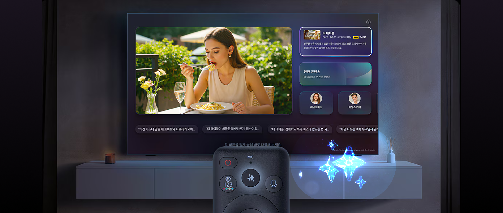
How can AI reshape everyday attention, choice, and agency when embedded into a familiar domestic object like a TV?
As TV systems grow more complex, everyday viewing increasingly assumes technical confidence. For many users, especially older adults or those unfamiliar with AI features, interaction itself becomes a barrier rather than an entry point.
With countless OTT apps, channels, and services available, the act of choosing has become a task in itself. Users often spend more time navigating options than engaging with what they came to watch.
As interfaces prioritize browsing and control, watching increasingly shifts away from immersion. The experience becomes fragmented, shaped by constant searching, switching, and decision-making.
I structured key scenarios showcased during the CES 2026 VP keynote.
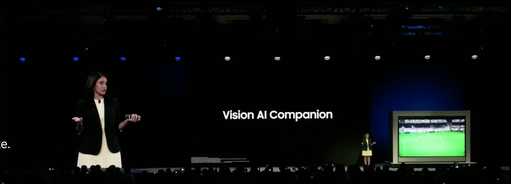
By detecting on-screen elements, Vision AI recognizes sports content in real time. This context awareness enables timely and relevant information during live viewing.
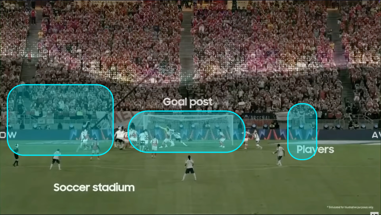
Based on research showing that users often feel frustrated by unwanted sounds during sports broadcasts, Vision AI allows users to control audio easily through voice commands.
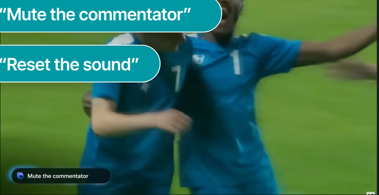
Users can ask casual questions such as “Who’s going to win today?” Vision AI responds with contextual answers based on relevant articles, statistics, and available data.
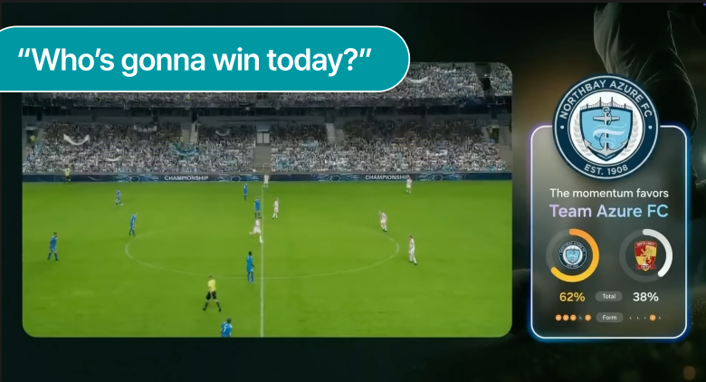
When food appears on screen, users can request an analysis of the dish and receive a recipe through natural conversation.
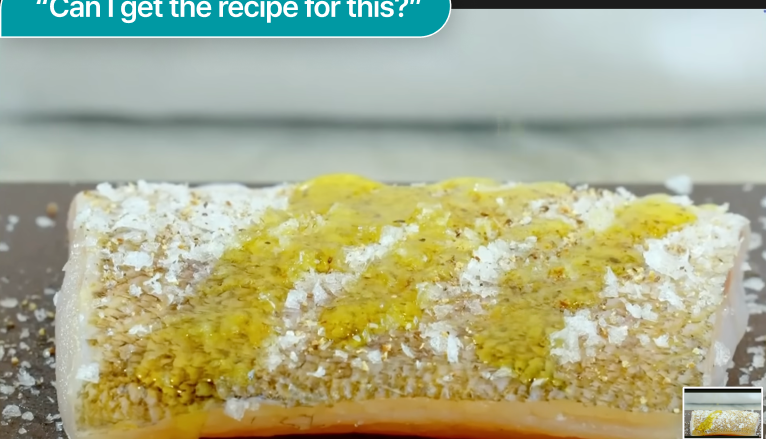
Vision AI generates personalized recipes based on previously learned user data, such as dietary preferences, activity patterns, and past interactions.
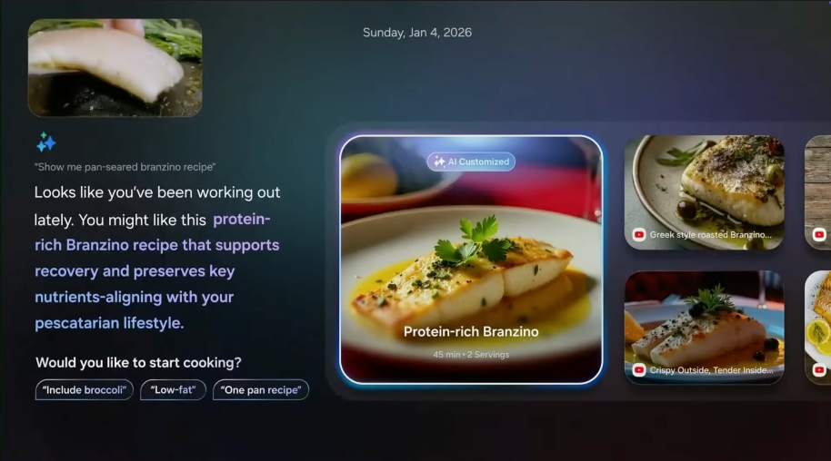
Looks like you’ve been working out lately.
Samsung Health DataPescatarian Lifestyle
Remembers personal preference based on prior conversationUsers can ask casual questions such as “Who’s going to win today?” Vision AI responds with contextual answers based on relevant articles, statistics, and available data.
Through research, I recognized the importance of making AI reasoning visible to users. This led me to explore ways of externalizing the system’s reasoning process, allowing users to follow each step of the AI’s thinking rather than receiving opaque outcomes.
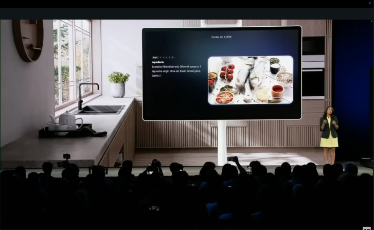
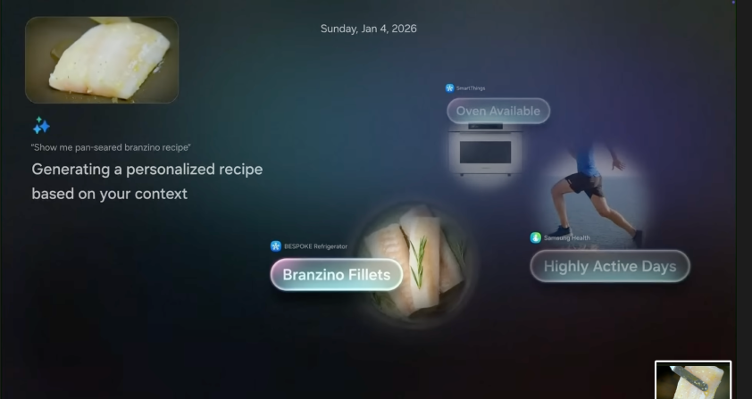
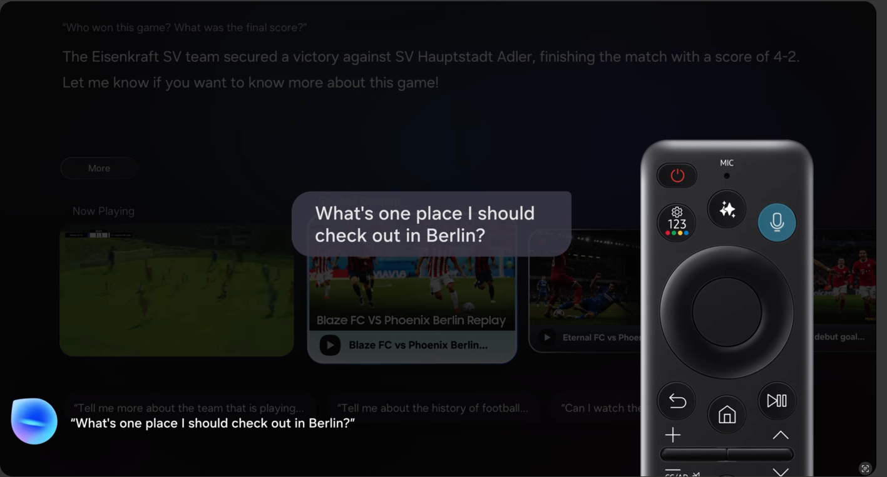
Users speak to invoke AI Home, and the system interprets the current scene, and relevant information is returned without pausing playback or forcing navigation through layered menus. Users change audio or subtitles, adjust picture modes, move between rows, open apps, and resume positions with a single utterance.
Requests such as “something light and funny tonight,” “who is this actor,” or “show related clips” surface concise cards tied to what is on screen.
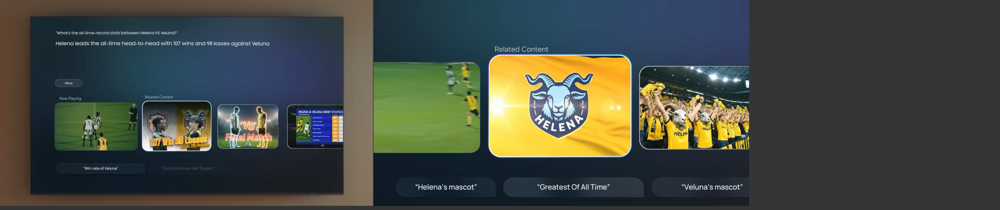
Designing conversational interaction for a large screen showed me that ease of use alone does not lead to meaningful engagement. Although voice commands made navigation faster, user trust depended more on whether the system felt intentional in its responses, rather than simply executing commands.
Through user testing, I found that users felt more connected when the AI explained why certain content or actions were suggested, instead of presenting results without context. This led me to see conversational AI not just as a tool for efficiency, but as something that shapes how people attend to, interpret, and choose within everyday situations.
These observations pushed me to consider how designers might move beyond optimizing control, toward creating AI systems that support reflection and agency without encouraging passive dependence.
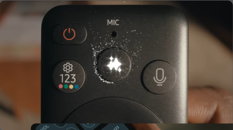
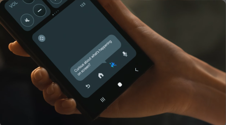
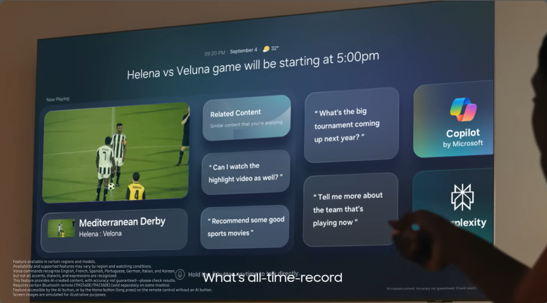
Users can explore context-aware information while keeping the program on screen. Beyond characters and plot, on-screen details—such as clothing brands and the music that’s playing—surface instantly at the press of a single button, with no tedious searching required.
In this always-alive AI Home, users experience an interface that feels responsive, adaptive, and continuously engaging. To prevent cognitive overload and support sustained attention, the number of cards shown at any given time is intentionally limited. This decision was informed by insights derived from A/B testing.
We define users who struggle with AI features as a primary accessibility audience. Where traditional accessibility stops at “usable,” VAC leverages the large screen with visually rich, card-based presentation to lower cognitive and motor load. By making key options visible and confirmable at a glance, the experience reduces dependence on prompt-writing skill and meaningfully lowers the threshold for AI exploration.
We believe advanced AI should be equitable, not exclusive. This interaction model is the starting point for universal AI interactions on Samsung TV, raising the standard for open, sustainable AI experiences that welcome everyone.
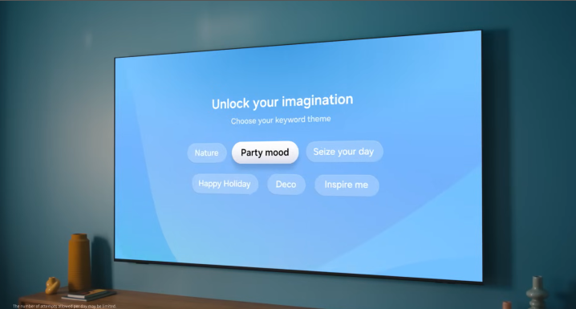
When users select keywords, the system generates music and visuals that align with the chosen atmosphere.
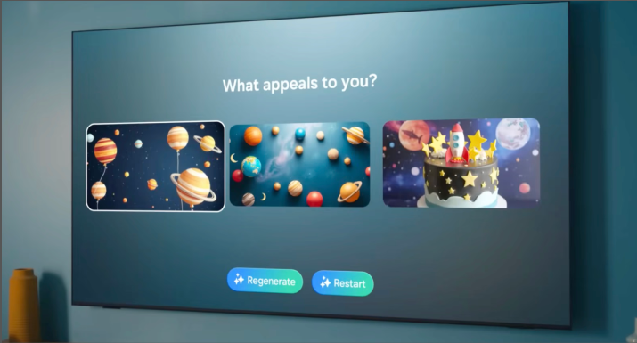
Based on the generated visuals, users can adjust music and imagery through natural conversation.
Designing the TV as an ambient presence made me reconsider what a screen represents when it is no longer actively used. Rather than treating the idle screen as empty, I explored how it could participate in shaping the atmosphere and emotional tone of the home. This shifted my focus from content delivery to how visual systems quietly coexist with everyday life.
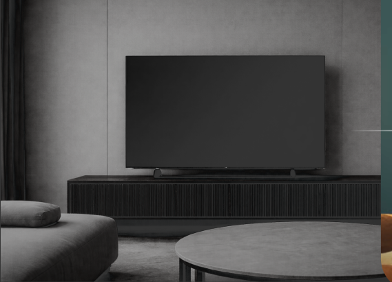
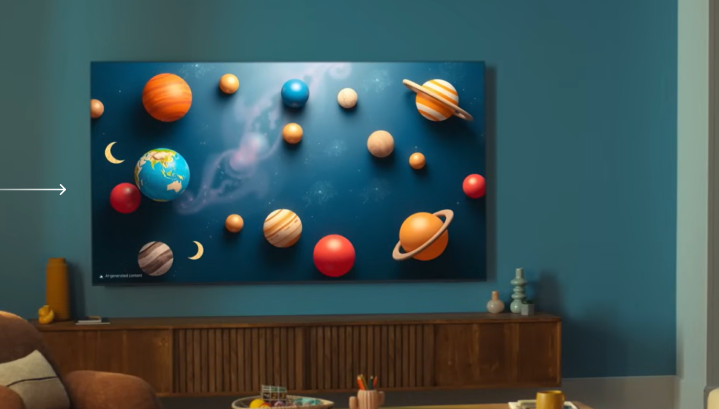
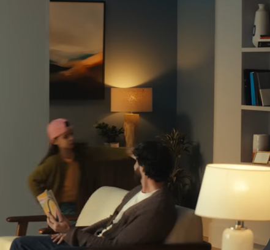